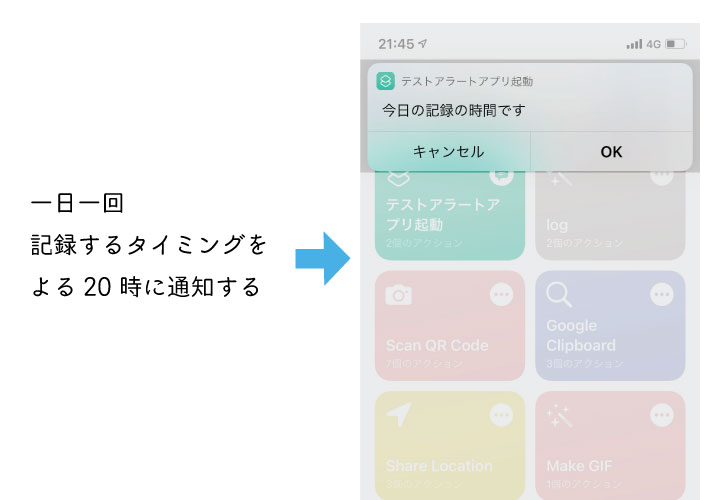
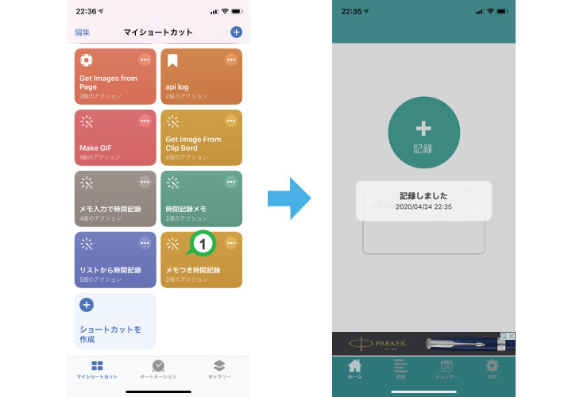
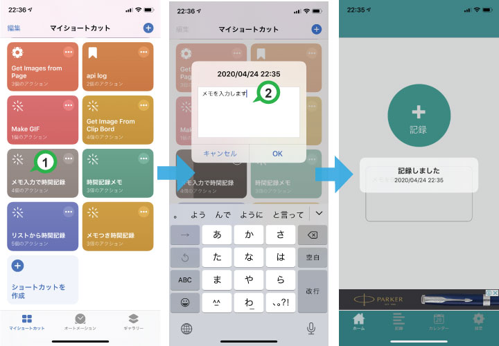
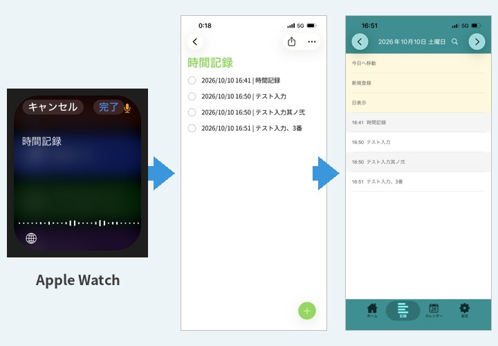

便利なショートカット
iPhone の「ショートカット」アプリと組み合わせると、記録がもっと手早くなります。気になる項目の「設定方法を見る」から手順ページへ進めます。

時間記録の通知をうけとるオススメ！

便利ポイント
設定方法を見る
１日に一度、記録の忘れがないか振り返る時間を決めて通知を設定できます。
記録するのを忘れる・記録を習慣化したい人にオススメです。
設定の説明は少し長いですが、一度設定できればかなり便利です。
登録しておいたメモで記録する

便利ポイント
設定方法を見る
ショートカットボタンを１回タップするだけで、あとは何も入力せずに手早く記録できます。
いくつかのショートカットのメモを編集してホーム画面にまとめておくと便利です。
アプリを開かずにメモを入力し記録する

便利ポイント
設定方法を見る
記録する手間はアプリから記録するのと同じですが、登録済みのメモ以外の普通のメモを記録したいとき、ショートカットからも入力できると画面移動しなくてすむため便利です。
現在地をカンタンに記録する
便利ポイント
設定方法を見る
自分がいる場所を時間と一緒に記録するときに便利です。
現在地の住所(例:「105-0011 東京都港区芝公園４丁目２−８」)と GoogleMap の URL をメモにして記録します。スマホの GPS で現在地を自動取得します。
Apple Watch から記録する

便利ポイント
設定方法を見る
iPhone を取り出さなくても、Apple Watch からその場でメモを残せます。
記録した時刻はウォッチでメモを取った時刻のまま、あとで iPhone からまとめて時間記録アプリに取り込めます。
育児記録に便利なショートカット集
便利ポイント
ショートカット集を見る
母乳・哺乳瓶・オムツ交換・睡眠・身長体重など、育児の記録をアイコン1タップで残せるショートカットをまとめています。便利なショートカットの情報を教えてくれた方ありがとうございました！